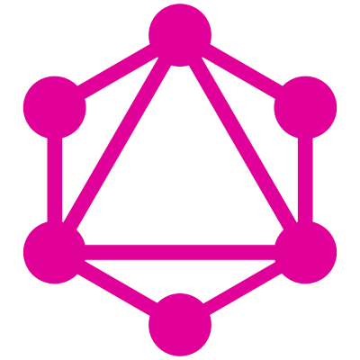

Getting Results
Finding What We Need with Elixir
CodeBEAM SF - February 28, 2019
Hi, I'm Adrian
Engineer.
Sometimes speaker.
Elixir Programmer.
Teachers Pay Teachers (TPT)
is a marketplace for educators
Fraction Printables
a typical flow for a user
/
/Browse
/Product
/Checkout
Search is one of our main user flows
it's also the one of the first parts we worked on in Elixir
We use Elixir
But that wasn't the always the case.
We had a need to re-architect our API
that allowed us to explore other programming languages
Let's take a look at the old system (simplified)
Mostly everything was tied into our CakePHP application.
But how do we re-architect our API without affecting our existing flows?
a complete re-write? no
what if we can break down the flows? ok
So, Elixir, neat. But what if we don't like it?
what about an isolated test?
Brilliant, we are going to de-couple anyway
Now, what is a good test?
Minimal risk?
Yet, an effective proof-of-concept?
autosuggest
autosuggest ...
... is a REST API
... returns related terms
... built in PHP
and the updated autosuggest is ...
built on top of Phoenix

a REST API
uses Agent to keep state
uses Erlang Term Storage (ETS) as a caching layer
here's a simplified version of what we did
we create a trie utilizing a library, Retrieval
iex(1)> words = ["aa", "ab", "ac", "bb", "bc", "cc"]
["aa", "ab", "ac", "bb", "bc", "cc"]
iex(2)> trie = words |> Retrieval.new()
%Retrieval.Trie{
trie: %{
97 => %{97 => %{mark: :mark}, 98 => %{mark: :mark}, 99 => %{mark: :mark}},
98 => %{98 => %{mark: :mark}, 99 => %{mark: :mark}},
99 => %{99 => %{mark: :mark}}
}
}
quick trie data structure refresher

suggesting some terms
iex(3)> Retrieval.prefix(trie, "a")
["aa", "ab", "ac"]
iex(4)> Retrieval.prefix(trie, "b")
["bb", "bc"]
We can now walk the trie to find related terms.
ETS as cache
iex(5)> :ets.new(:trie_cache, [:set, :named_table])
:trie_cache
iex(6)> Retrieval.prefix(trie, "b")
["bb", "bc"]
iex(7)> :ets.insert(:trie_cache, {"b", v}) # v retrieves last value
true
get or insert terms from ETS
iex(8)> lookup = fn(term) ->
...(8)> case :ets.lookup(:trie_cache, term) do
...(8)> [] ->
...(8)> IO.puts("Not in ETS")
...(8)> results = Retrieval.prefix(trie, term)
...(8)> :ets.insert(:trie_cache, {term, results})
...(8)> results
...(8)> [{_term, results}] ->
...(8)> IO.puts("Found in ETS")
...(8)> results
...(8)> end
...(8)> end
#Function<6.128620087/1 in :erl_eval.expr/8>
iex(9)> lookup.("a")
Not in ETS
["aa", "ab", "ac"]
iex(10)> lookup.("b")
Found in ETS
["bb", "bc"]
what about our Agent?
ETL jobs run, so we want to use the latest data set
we store trie state in an Agent and modify as needed
simplified Agent example
iex(11)> {:ok, agent} = Agent.start_link(fn -> trie end)
iex(12)> Agent.get(agent, fn(trie) -> trie end)
%Retrieval.Trie{
trie: %{
97 => %{97 => %{mark: :mark}, 98 => %{mark: :mark}, 99 => %{mark: :mark}},
98 => %{98 => %{mark: :mark}, 99 => %{mark: :mark}},
99 => %{99 => %{mark: :mark}}
}
}
adding more words from an updated data set
iex(13)> more_words = ["abc", "abx", "aby", "bbc", "bbx"]
["abc", "abx", "aby", "bbc", "bbx"]
iex(14)> Agent.update(agent, fn(trie) ->
Retrieval.insert(trie, more_words) end)
:ok
iex(15)> Agent.get(agent, fn(trie) -> trie end)
%Retrieval.Trie{
trie: %{
97 => %{
97 => %{mark: :mark},
98 => %{
99 => %{mark: :mark},
120 => %{mark: :mark},
121 => %{mark: :mark},
:mark => :mark
},
99 => %{mark: :mark}
},
98 => %{
98 => %{99 => %{mark: :mark}, 120 => %{mark: :mark}, :mark => :mark},
99 => %{mark: :mark}
},
99 => %{99 => %{mark: :mark}}
}
}
state regeneration
we use a cron-like scheduler, Quantum
data jobs load in new data, so we want to regenerate our trie
we'll also clear our ETS cache (:ets.delete(:trie_cache))
recap on what we did
fetch terms (we do a bit of pre-processing in our data jobs)
create trie from terms
store trie state in an Agent
return some relevant terms
done :)
autosuggest quick stats
the PHP version latency was ~12 milliseconds
latency from Elixir autosuggest ~0.350 milliseconds
we were happy :)
breaking things down
we took a small piece of a big behemoth
made it a service
Now, let's talk about building out more things in Elixir
we settled on a new architecture for our backend
something that could allow us to build new services...
...and also continue to support old ones.
GraphQL
GraphQL is...
"GraphQL is a query language for APIs..."
"...gives clients the power to ask for exactly what they need and nothing more..."
Consider a database table like this
+------------------+
| Field |
+------------------+
| id |
| name |
| description |
| url |
+------------------+
We can have a GraphQL query like this
{
someTable {
id,
name,
description,
url
}
}
What if we didn't need all of that data?
we can query what we need
{
someTable {
id,
name
}
}
and the backend code remains the same
Great, how do we do this in Elixir?
Elixir + Absinthe
Now for a quick tour of Abinsthe + GraphQL
In Absinthe, we define objects
defmodule MyApp.Schema.SomeTable do
use Absinthe.Schema
use Absinthe.Schema.Notation
@desc "Some object: an example of an object."
object :some_object do
field :id, non_null(:id)
field :name, non_null(:string)
field :description, non_null(:string)
field :url, non_null(:string)
end
end
What's all that language?
GraphQL has a lot of fundamental types like Object.
use Absinthe.Schema
use Absinthe.Schema.Notation
Abinthe's way of defining a Domain Specific Language (DSL) for these types.
(uses a bunch of defmacros)
Object
@desc "Some object: an example of an object."
object :some_object do
field :id, non_null(:id)
field :name, non_null(:string)
field :description, non_null(:string)
field :url, non_null(:string)
end
Resolvers
let's add this field to our schema
field :some_table, list_of(:some_object) do
resolve fn(_args, _info) ->
{:ok,
[
%{
id: 3,
name: "Some name",
description: "some description",
url: "https://someurl.com"
}
]
}
end
end
Ideally, you would just have Resolver functions in a library
Recap so far on building out a resolver
define a schema
write your resolver function
really, that's it
Now, let's search
information retrieval is not easy
but like many things, we can work on smaller pieces
Simplified GraphQL End Goal
{
search(query: "fractions", facets: [:grade_one, :grade_two]) {
results {
id,
name,
price,
thumbnails
}
}
}
something like this is our bare minimum
let's look at some of the main pieces...
Input for search: keywords
We'll tokenize our input
leex
search strings
leex is a bunch of regex definitions and some Erlang code
%% leex code structure
Definitions.
Rules.
%% Skip whitespace is a good example of one
[\s\t\n\r]+ : skip_token.
Erlang code.
it will return the tokens we define
iex(1)> {:ok, tokens, _} = :lexer.string('math fractions')
{:ok, [{:word, 1, 'math'}, {:word, 1, 'fractions'}], 1}
search strings continued
yecc defines our parser grammar
for us, we want an intermediate form to send clean search terms
iex(2)> {:ok, ast} = :parser.parse(tokens)
{:ok, {:ast_and, [ast_word: 'math', ast_word: 'fractions']}}
two words: 'math' and 'fractions'
not that exciting, but special cases are now easier to handle
take for example a search for quoted string "math fractions"
iex(3)> {:ok, tokens} = :lexer.string('"math fractions"')
{:ok, [{:quoted, 1, '"math fractions"'}], 1}
custom lexer and grammar allows for flexibility
allows us to be able to clean up the input
supports advanced queries (i.e. quoted search, negated search)
Facets
facets are things you can filter search on
Facets are just defined as a defstruct
%SearchFacet{
category: :grades,
name: "6th grade",
id: 8,
url: "Grade-Level/Sixth"
}
Caching Facets
facets don't change too often and we have a lot
iex(1)> SearchFacet.all() |> length()
2001
Luckily we utilize Cachex to do cache
# As simple as this
iex(2)> Cachex.get(:search_facet_cache, :grade_facets)
It's nice to cache :)
But, let's talk about in-memory cache and cache warming...
In the case of a new node coming online, there are more cache misses
With a setup with Kubernetes, you'll see this a bit :(
Back to our search GraphQL endpoint
for simplicity, we now have clean search input
and we can now facet our search results
this is how we can search...
search_query
# use our lexer and parser
|> SearchText.parse()
# Pass in our keyword in a format Sphinx Search likes
|> SphinxQuery.query()
we now have search results
Let's give it a go
and also look at GraphiQL
results look to be what i expect :)
Let's talk about wrapping GraphQL around services
Related searches
we have a Related Searches module on our search results
it's just a GraphQL call wrapped around Autosuggest
Related Searches is similar enough to Autosuggest
we reused its service, but we call it through GraphAPI
since we use it on the search results page, we just add that in as a field
{
searchProducts(query: "fractions", facets: []) {
results {
id
name
}
relatedSearches
}
}
We modified Autosuggest to also return similar data
We actually did this for quite a bit of services
including PHP
Wrapping it up
Some things we have services for...
Autosuggest / Related Searches
Product recommendations
External blogs
External financial service
GraphQL for new Clients
Some things we use GraphQL for data...
PHP GraphQL client
A/B Side by Side
Search Metrics Tooling
There will be more to build...
we're still working on porting over pieces of the site
This is it for now. Thank you!
{github.com, linkedin.com/in, twitter.com} / drincruz
Slides: http://bit.ly/2SwkKhZ
TPT: https://www.teacherspayteachers.com/Careers